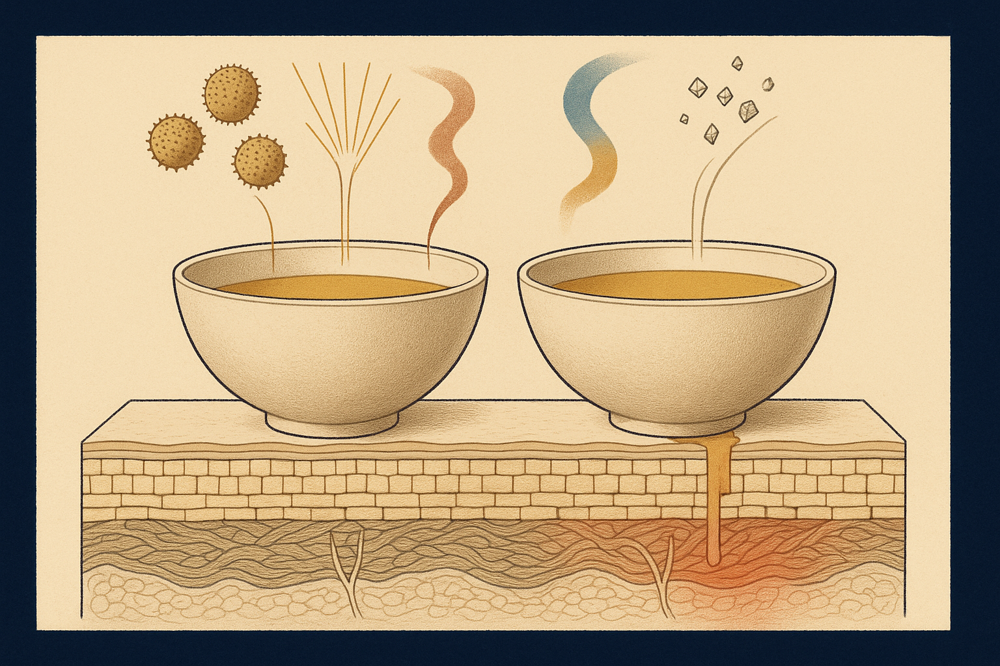
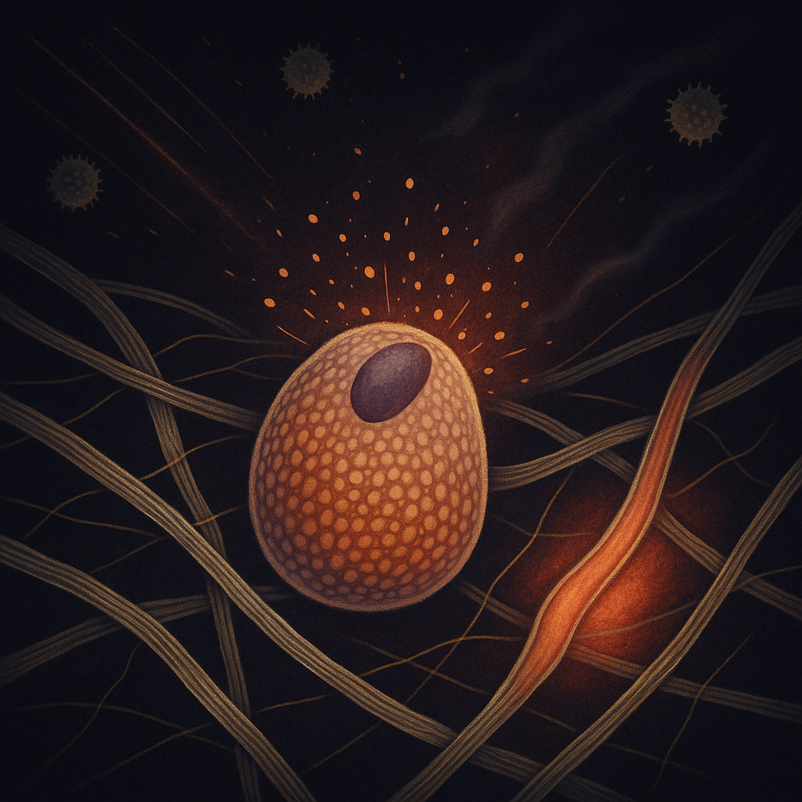
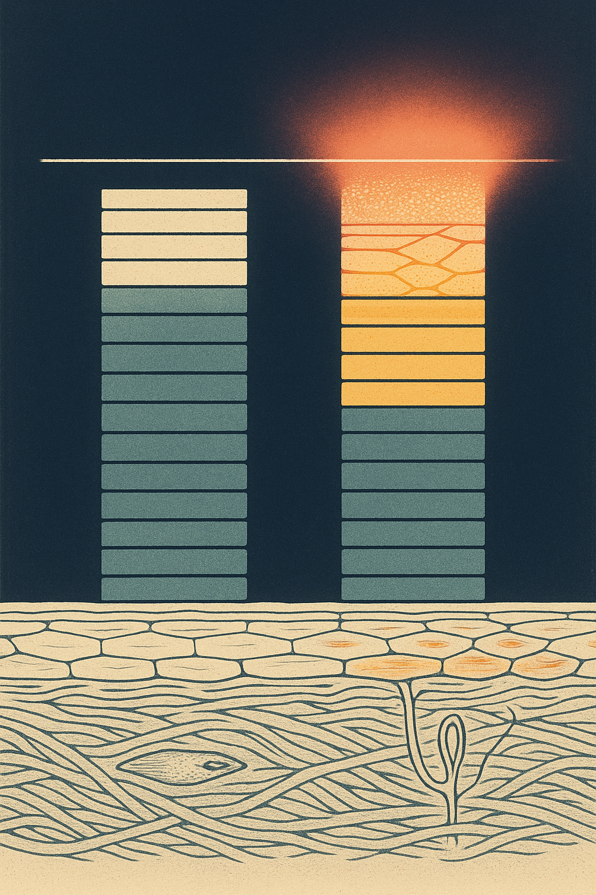

Review below. Reply approve to publish the Facebook post, or tell me edits.

The serum that was fine in August is stinging today. It is the same serum. September is not the same month.
Most "my skin has become sensitive" moments in spring are not a new allergy, and not a product that has gone off. The inputs changed. The routine did not.
That gap is the whole story. What is landing on your face on the way to work, on the walk at lunch, on the drive home with the window down, is not what was landing on it four weeks ago.
It is tempting to think of sensitive skin as a type, like a blood group. Something you either are or are not. In practice it behaves much more like a threshold.
Picture a basin. Everything your skin deals with in a day flows into it: UV, wind, temperature swings, pollen, friction from a scarf, hot showers, plus whatever you apply. Below the rim, you feel nothing. You would not describe your skin as reactive because nothing is asking you to. Above the rim, it overflows, and suddenly you feel everything: the tingle from a vitamin C that never tingled, tightness after cleansing, a flush across the cheeks that takes twenty minutes to settle.
Nothing about the skin itself has to have changed for that flip to happen. Only the sum crossing it.
> Sensitivity is a threshold, not a property.
That is also why the sensations are worth reading carefully. Stinging, tightness and flushing are largely signals of nerve and vascular reactivity: sensory nerve endings firing more readily, small surface vessels dilating more easily. They are the skin reporting that the total load is high. They are not, on their own, evidence that a product has become harmful to you.
Quite a lot, and most of it is invisible and additive.
Grass pollen season. From roughly September through November, grass pollen ramps up across the south east in particular, and Melbourne is notorious for it. Pollen does not stay politely in the nose. It settles on skin, on eyelids, on the jawline, and gets rubbed in by hands and collars all day.
UV climbing well before it feels hot. This is the one that catches people. The UV index returns to burn territory in early spring while the air still feels cool enough for a jacket. You are not getting the heat cue that normally tells you to be careful, so you stay out longer.
Wind. Spring in most of the country is the windy season. Wind strips surface moisture and adds mechanical irritation, plus it carries the pollen and dust into contact.
Big day-to-night swings. A twelve degree gap between the afternoon and the evening means repeated rapid vasodilation and constriction. If you flush easily, this alone is a noticeable load.
More outdoor hours. The single largest change, and the one nobody counts. Longer evenings, weekend sport, gardening, the beach walk you have not done since March. Every one of those multiplies the four inputs above.
Add all of that and the basin is already fuller before you have washed your face.
Here is the behavioural trap, and it is the expensive part.
When the threshold drops, the thing that gets convicted is whatever you applied last. It stung, so it must be the culprit. Into the bin it goes, often a perfectly good product you have used happily for eight months.
Then comes the escalation. A whole new "sensitive skin" range, bought in one go. Five products swapped on the same night. A new cleanser, a new moisturiser, a barrier cream, a different sunscreen, and the old serum quietly dropped.
You have now changed five variables at once against a background that is itself moving. If your skin settles, you cannot say which change did it. If it gets worse, you cannot say which change did that either, and you may have introduced two new fragrances and a new preservative system in the process. You have spent money to destroy your own ability to attribute anything.
The reflex is understandable. It is also the least informative thing you can do in the month when information is hardest to come by.
A calmer sequence, and one that actually teaches you something.
List the inputs for a week before you remove any product. Note outdoor hours, wind, whether you were in a car with the heater on, high pollen days, hot showers, and what you applied. A week of notes usually finds the pattern on its own.
Cut the highest-frequency irritant load first. If you are using acids or a retinoid four or five nights a week, that is the biggest dial in your routine. Drop those to one or two nights before you touch the gentle constants. Most people cut the moisturiser and keep the retinoid, which is exactly backwards.
Change one variable, then wait a fortnight. Skin turnover and inflammation do not resolve in three days. Anything you judge inside a week you are judging on noise.
Keep the constants constant. A boring cleanser, a boring moisturiser, sunscreen. You need a stable baseline to measure against. Any low-reactivity step you already do, a bland moisturiser or a device session, is the kind of constant that does not add to the irritant column, since it puts nothing on the skin surface. It is a cosmetic device, not medicine, and that is precisely why it sits quietly in a high-load month.
One honest caveat. If you have swelling, a rash that is spreading, or itch that wakes you at night, that is a GP or dermatologist conversation, not a routine tweak. Load audits are for stinging and tightness, not for genuine reactions.
Not in the way the question usually means. It does not treat sensitivity, and nothing about a light session lowers a pollen count or a UV index. What red light therapy at home can be is a step that adds nothing topical: no fragrance, no acid, no new preservative system, nothing left sitting on a surface that is already busy. In a month when the useful move is to subtract variables rather than add them, a step that changes nothing on the skin surface is one of the few things that does not muddy your own experiment.
Spring is a load problem with a scheduling answer. Fewer reactive variables, more boring constants, and a fortnight of patience before you conclude anything.
What is in your basin right now: pollen, wind, or just more hours outside?
If you want a closer look, the Redermis face and neck mask is currently $129 and the full spec is here.

Tolerance is a ceiling, not a trait.
Your skin did not turn on you in September. The load on it went up and your routine stayed the same.
Below the ceiling you feel nothing at all. Above it, the serum you have used happily for a year starts to sting.
In an Australian spring the ceiling gets crowded from underneath. Grass pollen season kicks off, the UV index climbs back up long before the weather feels hot, there is wind, and the day-to-night temperature swing widens. None of that is on your bathroom shelf, and all of it counts.
Here is the mistake: elimination panic. Something stings, so the newest product gets convicted and binned, three replacements arrive at once, and now five variables have changed and nothing is attributable. Do the opposite. Log the inputs for a week before you remove anything. Cut the highest-irritant frequency first. Acid and retinoid nights, not the gentle constants. Then change one thing, and hold it a fortnight.
A cosmetic device is not medicine, and a spreading rash or itch that wakes you is a GP conversation.
Ten minutes a day of light is one of the boring constants rather than another new variable. The Redermis face and neck mask is currently $129.
Which input caught you out this spring: pollen, wind, or just more hours outside?
If you want a closer look, it is here: https://redermis.com.au/products/red-light-therapy-face-neck-mask
#skinbarrier #sensitiveskin #skincaretips #springskin #sensitiveskincare #skincareaustralia #redermis
IMAGE PROMPT: Conceptual editorial science illustration in the style of Scientific American or New Scientist, square format, single iconic macro subject with generous dark negative space. Subject: a histologically accurate dermal mast cell, a rounded cell densely packed with fine granules, rendered correctly and legibly, sitting immediately alongside a real capillary loop threading through woven collagen fibres. Many small converging inputs arrive as fine drifting particles from several directions at once, no single dramatic trigger, each a faint trail entering the frame. The cell is releasing its granules outward, and the capillary beside it visibly widens, flushing warm coral through the surrounding dermal weave. Chiaroscuro lighting, deep indigo negative space, ember-red and honey-amber accents, precise linework over soft glow, structured and intelligent, not a formless abstract blur, not a photograph. No product, no mask, no device, no technology, no people, no faces, no hands, no text, no numbers, no letters, no logos, no tick marks, no axes, no scale bars, no labels, no invented pseudo-biology.

Nothing is wrong with your serum. Something is wrong with the month.
Sensitivity is a threshold, not a trait.
Below the line, you feel nothing. Above it, you feel everything, including the products that behaved perfectly in August.
Look at what actually changed. Grass pollen is up. The UV index is climbing back before the weather feels warm. Wind. Fifteen-degree swings between 8am and 8pm. More time outdoors.
None of that lives on your bathroom shelf. All of it counts toward the total load.
So the fix is not elimination panic.
Do not bin the product. Do not buy three new ones (you lose the ability to tell what did what).
Cut the acid and retinoid nights first. Keep the gentle constants. Change one thing. Wait a fortnight.
Subtract variables in a high-load month. Add them back in autumn.
It is a cosmetic device, not medicine.
If it is spreading, or the itch wakes you at night, that is a GP conversation.
Comment your city, the pollen counts are wildly different in Sydney, Melbourne and Perth right now.
Ten minutes a day, nothing to rub in. Link in bio if you want a closer look at the spec.
#skinbarrier #sensitiveskin #springskin #hayfeverseason #australianskincare #skinlongevity #skincarescience #redlighttherapy #ledlighttherapy #skincareroutine #melbournepollen #skintok #ledfacemask
IMAGE PROMPT: Vertical 4:5 editorial science illustration in the spirit of Quanta Magazine, tall, elegant, structured and diagrammatic, never abstract blur and never photographic, generated tall enough to crop cleanly to 2:3. TWO identical translucent columns stand SIDE BY SIDE on one shared horizontal baseline, equal in width, equal in height of frame allocation and evenly spaced, both entirely inside the frame and both fully visible from base to top. Each column is built from many thin warm horizontal laminae stacked flush on top of each other with no floating or detached slabs and no exploded gaps: every layer touches the layer below it. A SINGLE plain unbroken hairline rule crosses the ENTIRE width of the frame near the TOP, well above the midpoint: the threshold. The LEFT column stops just short of that rule and stays cool, calm and orderly, its laminae in deep teal ink and bone cream. The RIGHT column is identical in every way except for ONE extra thin ochre lamina at its top, drawn as a fine field of pollen sized particles, and that single extra layer alone breaches the rule. Where it crosses, a coral flush blooms and spreads sideways above the line across a stylised corneocyte surface plane of overlapping flattened polygonal cells, drawn as a delicate tessellated sheet that is physically ATTACHED to and continuous with the tops of the columns, resting on them, never floating detached in mid air. Across the base of the frame, a shallow band of histologically accurate dermis runs beneath both columns: finely woven banded collagen bundles, ONE slender spindle fibroblast and ONE hairpin capillary loop, drawn correctly in fine ink. Ground is deep ink navy with bone cream paper grain, generous negative space, fine linework, museum quality diagrammatic clarity. Palette deep ink navy and teal, bone cream, ochre and terracotta laminae, one coral bloom. The visual argument: one extra input, same structure, completely different outcome. Absolutely no trees, no branches, no roots, no leaves, no foliage, no rope, braid or twine textures. No floating or detached sheets, slabs or fragments. No product, no face mask, no LED device, no technology, no gadget, no screens, no people, no faces, no hands, no text, no letters, no numbers, no labels, no captions, no tick marks, no axes, no scale bars, no legend, no logos, no invented pseudo biology. Both columns must be complete, fully visible and equal in weight.
## Title
Fine in August, Stinging in September: Spring Sensitive Skin Explained
## Description
Skin does not turn sensitive in spring. The load crossing it climbs. Four things change at once: grass pollen season starts. UV climbs back to burn levels before the weather feels hot. Wind strips surface moisture. Day-to-night temperature swings widen. Same routine, more inputs. So audit the load instead of binning products. Log the inputs for a week. Cut acid and retinoid nights first, not the gentle constants. Change one thing. Wait a fortnight.
## CTA
A closer look at the full spec: https://redermis.com.au/products/red-light-therapy-face-neck-mask
## Hashtags
#SensitiveSkin #SkincareScience #SkincareRoutine #SpringSkincare #SkinBarrier
Note: this pin reuses the Instagram image.